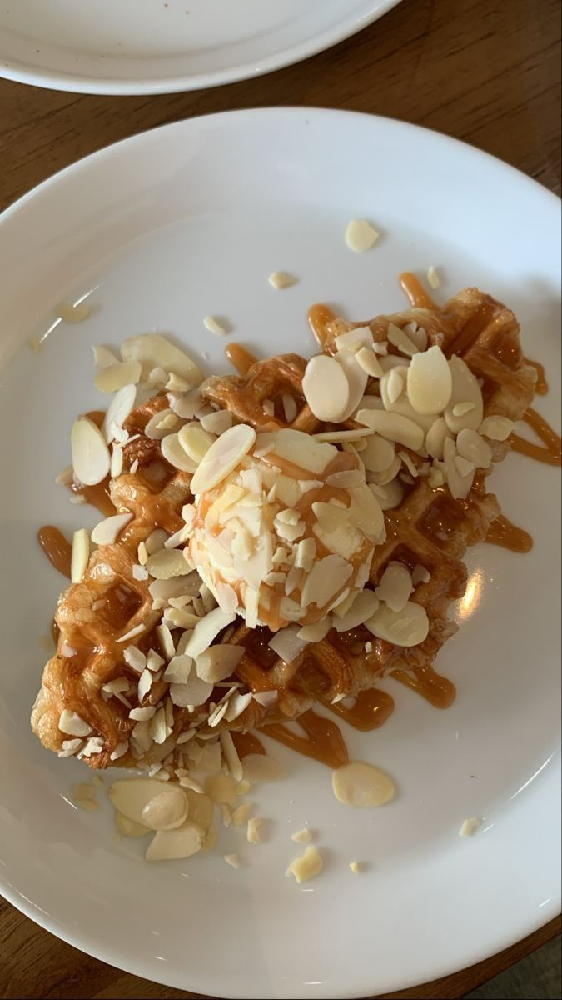
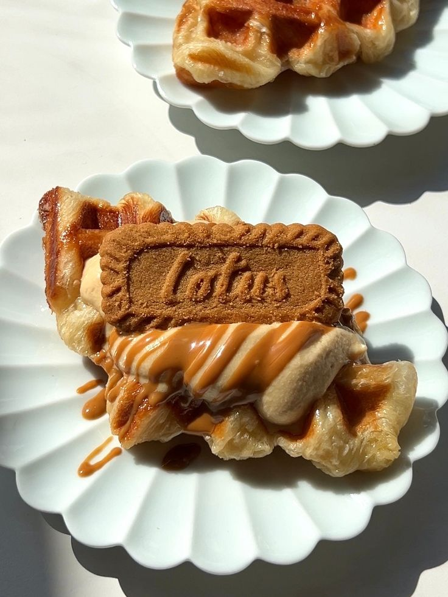

Selamat Datang di Laitsy croissant waffle Wawa!
Laitsy Croffle Wawa adalah spotnya para pecinta croissant waffle yang crunchy dan buttery! Kami menyediakan beberapa varian jenis croissant waffle terbaik yang bisa kalian nikmati. Hanya di Laitsy Croffle Wawa kalian bisa melihat proses pembuatan croffle secara langsung, yang masi melted dan pastinya masih dalam fresh di depan mata . Kami menjamin kualitas rasa tinggi dalam setiap sepiring croissant waffle kami. Nikmati rasanya yang kaya akan tekstur luarnya yang crunchy dan dalamnya yang soft elegan, yang menciptakan kecanduan akan croffle yang tak terlupakan.
Best Seller Menu
1. almon cake croffle
Croffle almon memiliki tekstur renyah di luar dan lembut di dalam, mirip dengan croissant yang
dipanggang dalam cetakan waffle. Perpaduan ini menciptakan pengalaman makan yang unik, di mana rasa
manis dan gurih dari butter berpadu dengan aroma khas sirup maple dan potongan almond yang memberikan
sensasi nutty yang menyenangkan.
2. lotus creamyice
lotus Croffle menawarkan kombinasi rasa manis dan gurih yang sangat menggoda. Aroma khas biskuit Lotus
yang karamel dan sedikit rempah berpadu sempurna dengan tekstur renyah croffle. Ketika dipanggang,
croffle ini menghasilkan aroma butter yang menggugah selera, membuatnya menjadi camilan yang sulit
untuk ditolak
3. chicken croffle
Croffle chicken menawarkan perpaduan rasa gurih dari ayam goreng yang renyah dengan manis dan asin
yang khas dari adonan croffle. Sensasi ini menciptakan pengalaman makan yang unik, di mana setiap
gigitan memberikan rasa yang kaya dan memuaskan. Beberapa tempat menyajikan croffle ini dengan
tambahan saus, seperti saus keju atau saus pedas, yang semakin memperkaya cita rasanya.
4. savory moza croffle
Croffle grilled cheese menawarkan perpaduan rasa gurih yang sangat menggoda. Rasa keju yang leleh
dan creamy berpadu sempurna dengan adonan croffle yang renyah, menciptakan pengalaman makan yang kaya
dan memuaskan. Keju yang digunakan, biasanya mozzarella atau cheddar, memberikan sentuhan savory
yang kuat, menjadikannya pilihan ideal bagi pecinta makanan asin.
Our Best-Selling Croffles
 